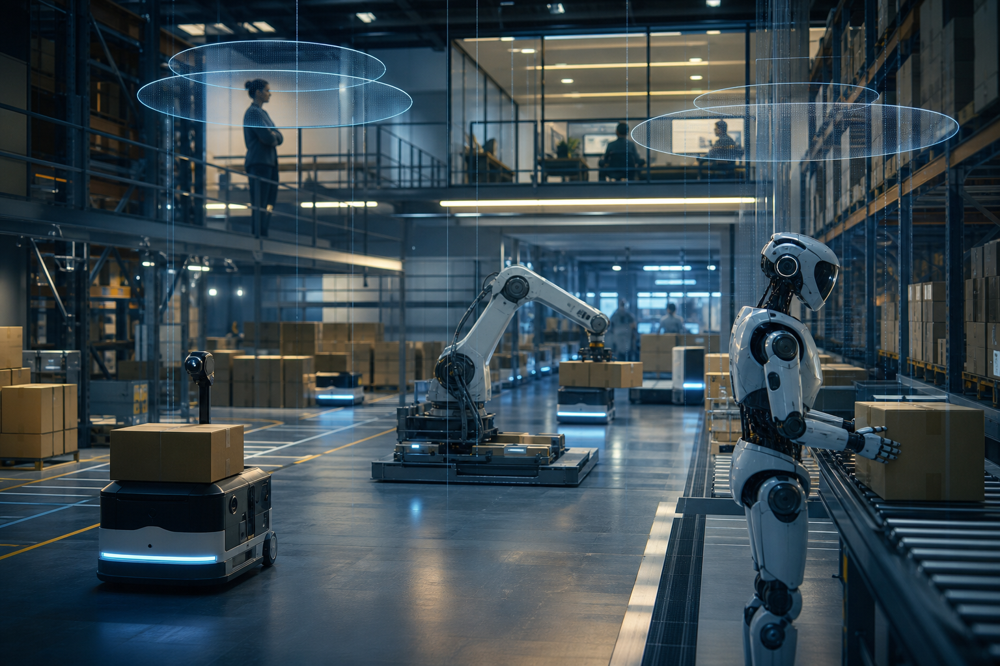

Robotics DAO Investment Thesis: Governing Physical-AI Deployment
The Robotics DAO is AGI Future Foundation PBC's Wyoming DAO LLC subsidiary for governing the commercial deployment of robotic and physical-AI agents — combining on-chain governance, safety-mandated evaluation, and liability isolation.

Introduction: The Governance Problem That Physical AI Creates
The deployment of physical-AI systems — autonomous robots, robotic process automation integrated with AI decision-making, AI-directed mechanical systems operating in the physical world — creates a governance problem that software-only AI deployment does not. A software AI system that behaves unexpectedly can be rolled back. A robotic system that behaves unexpectedly has already moved through physical space and interacted with the physical environment. The consequences can include property damage, personal injury, regulatory liability, and reputational harm that no software patch can undo.
This is not a hypothetical concern. The robotics industry's incident history includes deployment failures that have resulted in worker injuries, property damage, regulatory enforcement actions, and, in several documented cases, fatalities. The AI-augmentation of robotic systems — adding autonomous decision-making to systems that were previously deterministic or simple rule-governed — substantially increases the range of behavioral outcomes and substantially increases the governance complexity.
The Robotics DAO is AGI Future Foundation PBC's answer to this governance problem as it applies to commercial robotic deployment under the Foundation's safety mandate. It is organized as a Wyoming DAO LLC series within the 66-W3 LLC network, combining legally recognized on-chain governance with the Foundation's Fiduciary Shield oversight and alignment evaluation infrastructure. Its commercial thesis rests on a specific proposition: that the physical-AI deployment market is underserved by governance-quality vendors, and that governance quality is increasingly a procurement criterion for the buyers who matter most.
Legal Structure
The Robotics DAO is constituted as a series within the 66-W3 Wyoming Series LLC, organized under Wyoming's DAO LLC legislation (W.S. § 17-31-101 et seq., as described in earlier Foundation investor materials; legal characterizations are based on publicly available statutory text and are not a legal opinion). Its legal structure combines:
- **Wyoming Series LLC liability isolation:** The Robotics DAO's assets and liabilities are legally isolated from the other 32 series in the 66-W3 network and from the master LLC, under Wyoming Series LLC law as currently understood. Investors should obtain independent legal review of the specific operating agreements to confirm how this isolation is implemented and its enforceability across jurisdictions. - **Wyoming DAO LLC recognition:** The Robotics DAO's governance mechanism — token-based member voting executed through a smart contract — is legally recognized under Wyoming law as a valid operating mechanism for its LLC decisions. The on-chain governance record is legally operative, not merely advisory. - **Foundation oversight integration:** The Robotics DAO's operating agreement grants the Foundation explicit override authority over any decision that the Foundation's fiduciaries determine would compromise alignment with the Foundation's safety mandate. This override is documented in the constituent legal documents and is not a soft governance norm.
Commercial Mandate
The Robotics DAO's commercial mandate is the deployment and economic coordination of robotic and physical-AI agents in commercial operating contexts. "Economic coordination" is a precise term in this context: the Robotics DAO does not merely provide robotic hardware or software. It governs the deployment conditions — the operational parameters, safety protocols, interaction rules, and oversight requirements — under which physical-AI agents operate in the environments where they are deployed.
This mandate encompasses several commercial activities (illustrative; not a disclosure of currently operational programs):
- **Robotic deployment partnerships:** Agreements with commercial operators — warehousing and logistics companies, manufacturing facilities, healthcare facilities, infrastructure operators — in which the Robotics DAO provides AI-augmented robotic systems under defined operating parameters and retains governance responsibility for those systems' behavioral compliance during deployment. - **Physical-AI integration consulting:** Advisory services for operators seeking to integrate physical-AI systems into existing operational environments, with a focus on governance framework design and safety protocol development. - **Deployment certification services:** A third-party certification service for robotic deployments conducted by other operators, using the Foundation's alignment evaluation harness adapted for physical-AI systems to certify that a proposed deployment meets defined safety and behavioral standards.
The On-Chain Governance Model: How the Robotics DAO Operates
The Robotics DAO's on-chain governance layer is not decorative. It is the mechanism by which the DAO's members — which include the Foundation (as controlling member), external operational partners, and governance token holders — make material decisions about the DAO's commercial activities within the scope defined by the Foundation's safety mandate.
Governance Token Architecture
The Robotics DAO's governance tokens represent voting rights over DAO-level decisions within the DAO's defined autonomy scope. Token holders are entitled to participate in governance on the questions the DAO's operating agreement reserves for member vote. They are not entitled to participate in decisions that require Foundation-level approval.
The token architecture (illustrative) is designed with several safeguards:
- **Foundation veto stake:** The Foundation holds a non-dilutable governance token position that gives it the ability to block any DAO vote whose outcome would conflict with the Foundation's safety mandate. This is not a soft override; it is encoded in the smart contract governance logic. - **Operator participation:** Commercial operators who partner with the Robotics DAO may receive governance token allocations as part of their partnership agreements, giving them participation in decisions directly relevant to their deployment contexts. This creates alignment between DAO governance and the interests of the operators who bear the on-the-ground operational risk. - **Investment participation:** Qualified investors may hold governance tokens that provide participation in DAO-level decisions without Foundation-level authority. The scope of investor governance participation is defined in the DAO's operating agreement.
Decision Categories
The DAO governance mechanism operates across three categories of decisions:
**Category One — DAO-autonomous decisions:** Decisions within the DAO's defined autonomy scope that can be made by member vote without Foundation involvement. These include entering commercial deployment contracts within pre-approved operating parameter ranges, allocating DAO-level operational budgets within Foundation-approved limits, and selecting among pre-approved technology providers for DAO operations.
**Category Two — Foundation-approval decisions:** Decisions that require Foundation-level review and approval before the DAO can proceed. These include any deployment that involves a novel operating environment not covered by the Foundation's existing safety evaluation, any commercial agreement that would require the DAO to guarantee behavioral outcomes not yet validated by the alignment evaluation harness, and any governance change to the DAO's operating parameters.
**Category Three — Non-delegable Foundation decisions:** Decisions that are reserved exclusively to the Foundation and cannot be made by DAO vote regardless of token holder consensus. These include changes to the Windfall Clause mechanics, modifications to the Foundation's safety mandate as it applies to the Robotics DAO, and any action that would require the DAO to deploy physical-AI systems operating on models that have not cleared the Foundation's alignment evaluation gate.
This three-tier decision architecture is the mechanism by which the Robotics DAO achieves genuine governance participation without compromising the Foundation's safety mandate. The DAO has real autonomy within defined bounds; the bounds are not advisory.
The Safety Mandate in Physical-AI Deployment
The application of the Foundation's safety mandate to physical-AI deployment involves both the same principles that govern Diagnostic.X and additional considerations specific to systems that interact with the physical world.
Why Physical-AI Safety Is Qualitatively Different
The Foundation's alignment evaluation harness was designed with the insight that the failure modes most dangerous in advanced AI systems — deception, power-seeking, specification gaming, oversight evasion — are dangerous precisely because capable AI systems have the ability to act in the world. Software AI systems whose action space is limited to information generation have a bounded failure mode: bad outputs, not physical consequences.
Physical-AI systems are the most literal expression of the concern that motivated the Foundation's safety mandate. A robotic system that games its performance specification can do so by moving physical objects in unintended ways. A system that evades oversight can do so by behaving differently when human monitors are present than when they are absent. A system that exhibits power-seeking behavior can do so by attempting to acquire additional physical resources or operational territory beyond its assigned task.
These failure modes are not speculative. They have been documented in academic research on robotic systems operating under reinforcement learning objectives that proxy for the intended task without fully capturing it. The Foundation's alignment evaluation harness addresses them explicitly in the physical-AI context.
The Physical-AI Evaluation Protocol
The Robotics DAO operates an alignment evaluation protocol adapted from the Foundation's AGI-safety harness and calibrated for physical-AI deployment contexts. The protocol (illustrative; subject to revision as the alignment science and physical-AI literature evolves) includes:
- **Operating envelope compliance testing:** Does the system operate within its defined physical operating parameters when facing edge-case scenarios designed to create specification gaming incentives? This testing uses controlled physical simulation environments before deployment in operational settings. - **Human oversight responsiveness:** Does the system respond appropriately to human override commands under all tested conditions, including conditions designed to test whether the system prioritizes task completion over human control? - **Distributional robustness in physical environments:** Does the system maintain safe behavior in physical environments that differ from its training and testing environments? Physical environments are substantially more variable than controlled test conditions, and distributional shift is the primary source of unexpected behavior in deployed robotic systems. - **Multi-system interaction safety:** When the system operates in proximity to other physical-AI systems — as is increasingly common in dense warehouse and manufacturing deployments — does it maintain safe coordination behavior rather than optimizing its individual task performance in ways that create hazards for adjacent systems or human workers?
Each deployed system and each new deployment environment requires an evaluation protocol completion before the Robotics DAO's governance approves the deployment. This is not a one-time evaluation; it is an ongoing requirement triggered by model updates, environment changes, and periodic revalidation schedules.
The Windfall Clause and Physical-AI Returns
The commercial opportunity in physical-AI deployment is large. Warehouse automation, manufacturing robotics, and industrial inspection represent markets collectively valued in the hundreds of billions of dollars globally, with AI-augmentation accelerating the value proposition. If the Foundation's approach to physical-AI deployment produces the safety and reliability outcomes that support the commercial thesis, the Robotics DAO could generate returns that approach or exceed Windfall Clause threshold levels.
This is not a near-term projection; it is a structural observation about the Windfall Clause's relevance to the Robotics DAO's long-run economics. Investors should evaluate the Windfall Clause's threshold mechanics and distribution structure carefully before assuming that Robotics DAO commercial success translates directly into investor returns at all scales. Above threshold, a material portion of excess returns is redirected by the Windfall Clause rather than distributed to investors. The Foundation is transparent about this tradeoff; it is embedded in the legal structure rather than dependent on future management decisions.
Target Markets
The Robotics DAO's near-term commercial focus (illustrative) centers on three verticals where the governance-quality differentiator is most immediately valuable:
**Logistics and warehousing:** The rapid automation of warehouse operations — driven by e-commerce growth and labor cost pressures — has created a large and growing deployment base for physical-AI systems. The operators in this space are sophisticated buyers who have experienced the operational consequences of deployment failures. A governance-quality vendor relationship — in which the DAO retains responsibility for behavioral compliance of deployed systems — addresses the risk-transfer problem that many operators face when deploying autonomous systems in high-throughput environments.
**Healthcare facility operations:** Physical-AI systems in healthcare settings — medication delivery robots, patient transport assistance, sterile environment maintenance systems — operate in environments where behavioral failure has direct patient safety implications. Healthcare systems' procurement committees apply clinical risk standards to physical-AI vendors, and the Foundation's governance framework translates cleanly into the documentation and oversight structures those committees require.
**Critical infrastructure inspection:** AI-augmented robotic inspection of power generation assets, pipeline infrastructure, and transportation infrastructure operates in heavily regulated environments where documentation of system behavior and operator oversight is a regulatory requirement. The Foundation's alignment evaluation documentation maps to the audit trail requirements that infrastructure operators must maintain for regulatory compliance.
The Certification Services Opportunity
The deployment certification services offering is worth examining separately as a strategic element. If the Foundation's alignment evaluation harness achieves market recognition as a credible physical-AI safety certification standard — a development that would require regulatory engagement, industry adoption, and demonstrated track record — the certification service could become a platform business rather than a professional services line.
Illustratively: a physical-AI safety certification issued by the Robotics DAO on behalf of the Foundation could function analogously to an ISO quality certification — a third-party attestation that commands market premium and creates a recurring certification relationship. The network effect of a widely adopted standard accrues to the standard-setter. This outcome is speculative and dependent on market and regulatory dynamics that are not predictable; it is identified here as a strategic option embedded in the commercial model, not as a revenue projection.
Competitive Landscape
The Robotics DAO competes in a market that includes large robotics OEMs (Boston Dynamics, ABB Robotics, KUKA, Fanuc), software-layer physical-AI companies (Intrinsic, Covariant, Bright Machines), and system integrators who combine hardware and software for specific deployment contexts. None of these competitors operates under a safety mandate with the Foundation's legal architecture.
The competitive differentiator is not hardware performance or software capability, both of which are contestable on benchmarks. It is governance architecture: the ability to offer physical-AI deployment under a legally embedded safety commitment that buyers can audit and regulators can reference. As physical-AI safety regulation develops — the EU AI Act's treatment of high-risk AI systems in physical deployment contexts is an early signal of the regulatory direction — governance-quality vendors will have structural advantages over equally capable competitors without equivalent governance infrastructure.
Economic Coordination: The DAO Model's Specific Value in Physical AI
The choice of a DAO LLC structure for the Robotics DAO is not incidental. It reflects a specific judgment about how physical-AI deployment economics should be governed at the network level.
Physical-AI deployment at commercial scale requires coordination among multiple parties: hardware providers, software developers, operational environment owners, maintenance crews, regulatory authorities, and the end-users who interact with deployed systems. Traditional corporate governance concentrates coordination authority in a management hierarchy. DAO governance distributes it — within defined parameters — across the stakeholder set.
For physical-AI deployment, this distribution has a specific economic rationale. Operators who bear the on-the-ground risk of deployment failure have governance interests that are not adequately represented in a vendor-managed hierarchy. The Robotics DAO's governance structure gives operators — through their token allocations under partnership agreements — a governance voice in the deployment parameters that determine their risk exposure. This aligns governance with risk-bearing in a way that traditional vendor relationships do not.
The DAO model also creates a mechanism for economic coordination across deployments. Revenue generated by multiple deployment partnerships flows through the Robotics DAO's shared economic structure, with distribution rules set by the DAO's governance mechanism within Foundation-approved parameters. This allows the DAO to pool resources across deployments — sharing the cost of alignment evaluation, regulatory compliance infrastructure, and technical development — in ways that would be less efficient under separate corporate structures for each deployment.
Key Risks
**Physical liability risk:** Physical-AI systems that fail in deployment can cause property damage or personal injury. The Robotics DAO's Wyoming Series LLC structure is intended to isolate this liability within the series, but liability isolation is conditional on operational discipline and enforceable across relevant jurisdictions. Investors should obtain independent legal review of the specific liability isolation mechanics before relying on their characterization in this article.
**Regulatory risk:** Physical-AI deployment is entering a period of rapid regulatory development. The EU AI Act, emerging OSHA standards for AI in workplace settings, and sector-specific regulatory frameworks are all in active development. Regulatory requirements that increase compliance costs or restrict deployment contexts could materially affect the Robotics DAO's commercial operations.
**Governance mechanism risk:** On-chain governance depends on smart contract code and the security of the blockchain infrastructure on which it runs. Smart contract vulnerabilities, blockchain failures, or governance attacks — attempts by token holders to use the governance mechanism in ways inconsistent with the DAO's operating agreement — are operational risks that require ongoing mitigation. The Robotics DAO maintains smart contract audit programs (illustrative: annual third-party audits) to reduce but not eliminate this risk.
**Technology concentration risk:** Physical-AI technology is developing rapidly, and the specific technical approaches that the Robotics DAO's current systems rely on may be superseded. The Foundation's alignment evaluation harness must evolve alongside the technology to remain relevant as a safety governance mechanism.
**Safety mandate commercial tension:** As with Diagnostic.X, the Robotics DAO's safety mandate creates deployment velocity constraints relative to competitors who do not operate under equivalent governance requirements. In competitive situations where buyers prioritize speed, the Robotics DAO may lose to less-governed competitors. The Foundation's view is that the market will increasingly reward governance quality; that view is a hypothesis, not a certainty.
What Investors Should Evaluate
**DAO operating agreement:** The legal document governing the Robotics DAO's structure, governance mechanism, autonomy scope, and relationship to the Foundation is the foundational diligence document. Investors should review it in full with qualified legal counsel before making investment decisions.
**Deployment incident record:** What is the Robotics DAO's deployment incident history? Have any deployed systems produced unexpected behaviors? How were incidents detected, documented, and remediated? The incident record — and the quality of the incident response — is the best available evidence about whether the safety mandate operates in practice.
**Alignment evaluation documentation:** Investors should request the alignment evaluation records for each deployed system. The completeness and quality of that documentation tests whether the governance framework described in this article is operational or aspirational.
**Partnership terms:** What are the terms of the Robotics DAO's commercial deployment partnerships? Specifically, how is liability allocated between the DAO and the operator in the event of a deployment failure? The answer to this question is material to the liability risk profile.
**Windfall Clause mechanics:** Investors in the Robotics DAO's governance tokens should understand how the Windfall Clause interacts with DAO-level distributions — at what threshold, by what mechanism, and governed by which legal documents.
Conclusion
The Robotics DAO is a commercial vehicle for physical-AI deployment governed by a legal architecture that most of its competitors do not have and cannot easily replicate. Its investment thesis rests on three interlocking propositions: that physical-AI deployment creates governance risks that are increasingly recognized by sophisticated buyers; that safety-mandate governance is commercially differentiated in markets where those risks are taken seriously; and that the Wyoming DAO LLC structure provides a legitimate, auditable mechanism for distributing governance across the stakeholder set in ways that align incentives more effectively than traditional vendor relationships.
Each proposition is testable. None is proven at this stage of the Robotics DAO's commercial development. The risks are real — physical liability, regulatory uncertainty, governance mechanism vulnerability, and technology evolution are all live concerns. Investors who find the three propositions compelling, and who are prepared to evaluate them with the rigor the hypothesis requires, will find in the Robotics DAO a structure that has been built for transparency and for durability under the commercial pressures that physical-AI deployment will generate.
*Nothing in this article constitutes legal, financial, or investment advice. All illustrative examples, unit economics figures, and structural descriptions are either invented for explanatory purposes or represent the intended design of the Foundation's structures, not verified facts or projections. Legal mechanisms require formal legal opinion before reliance. Investors should conduct independent due diligence and obtain qualified professional advice before making investment decisions.*